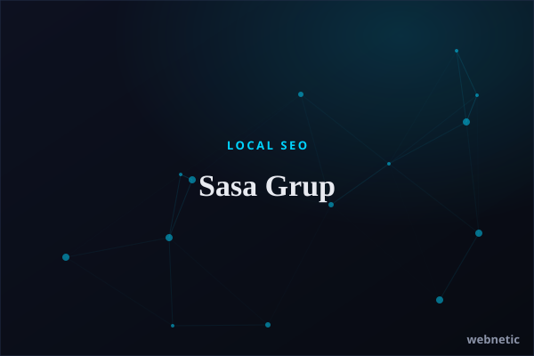

Local SEO · Sydney · Services
Sasa Grup
Webnetic Digital Solutions optimised Sasa Grup, a Sydney cleaning business, for local SEO across NSW. With a faster site, tuned Google Business Profile and targeted on-page work, it now ranks for high-intent local cleaning searches.
sasagrup.com.au